sea_water_temperature
qartod_sea_water_temperature_attenuated_signal_flag
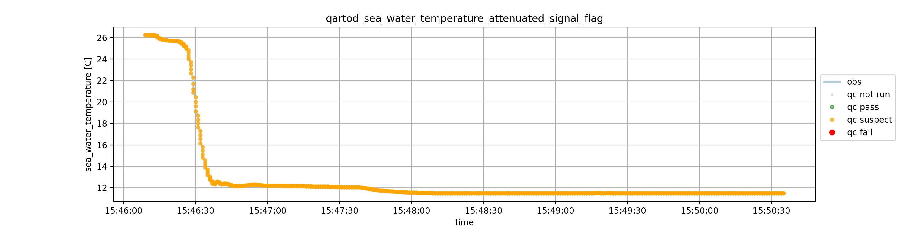qartod_sea_water_temperature_climatological_flag
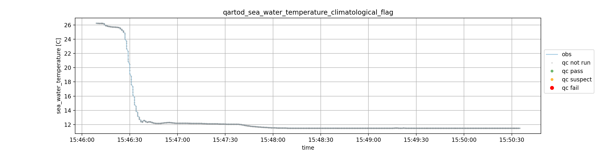qartod_sea_water_temperature_density_inversion_flag
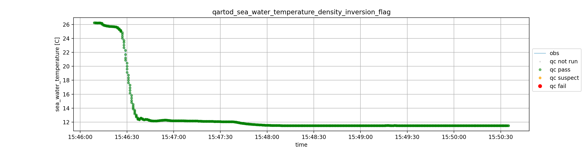qartod_sea_water_temperature_flat_line_flag
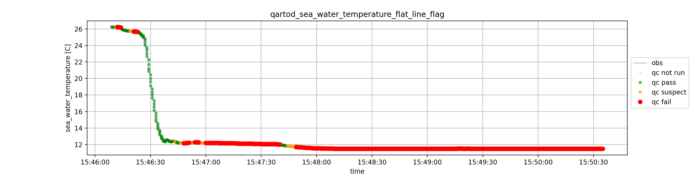qartod_sea_water_temperature_gap_flag
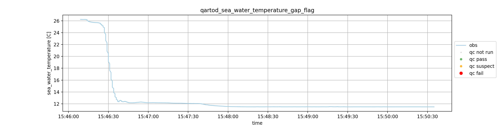qartod_sea_water_temperature_gross_range_flag
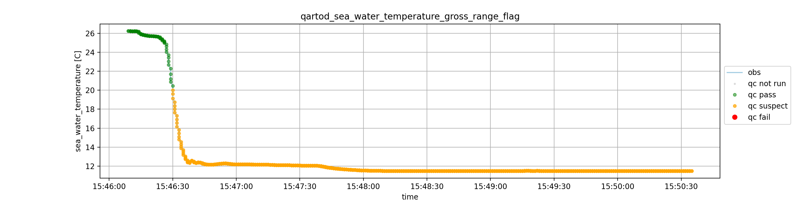qartod_sea_water_temperature_location_flag
qartod_sea_water_temperature_primary_flag
qartod_sea_water_temperature_rate_of_change_flag
qartod_sea_water_temperature_spike_flag
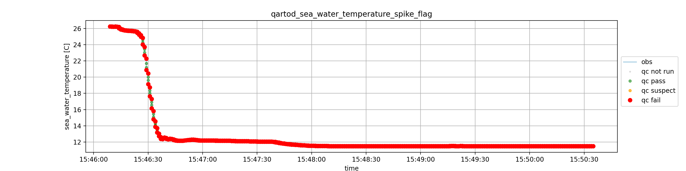qartod_sea_water_temperature_syntax_flag
qartod_sea_water_temperature_valid_range_flag
sea_water_electrical_conductivity
qartod_sea_water_electrical_conductivity_attenuated_signal_flag
qartod_sea_water_electrical_conductivity_climatological_flag
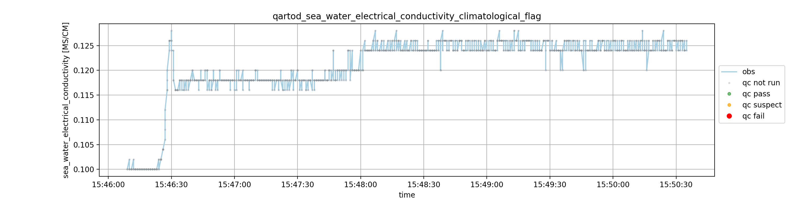qartod_sea_water_electrical_conductivity_density_inversion_flag
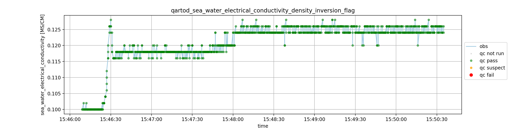qartod_sea_water_electrical_conductivity_flat_line_flag
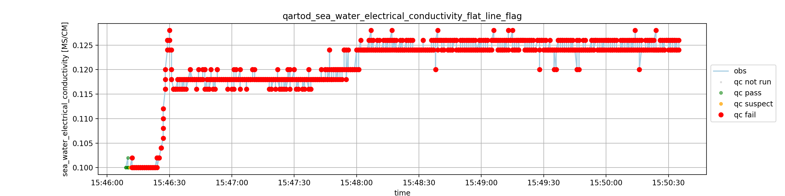qartod_sea_water_electrical_conductivity_gap_flag
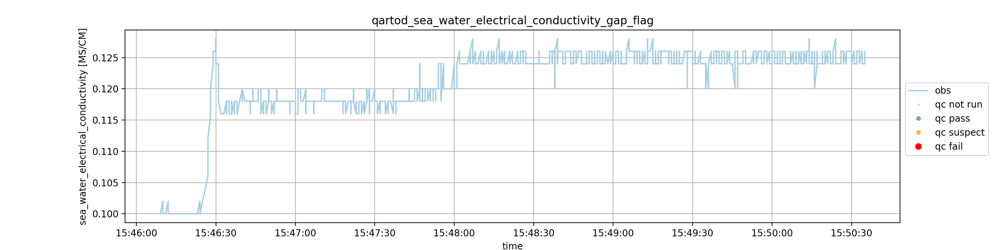qartod_sea_water_electrical_conductivity_gross_range_flag
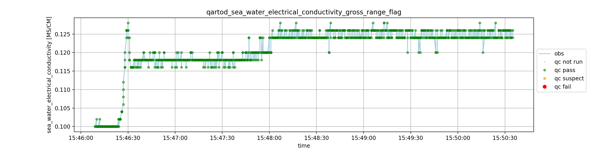qartod_sea_water_electrical_conductivity_location_flag
qartod_sea_water_electrical_conductivity_primary_flag
qartod_sea_water_electrical_conductivity_rate_of_change_flag
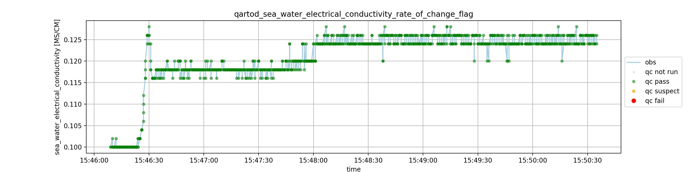qartod_sea_water_electrical_conductivity_spike_flag
qartod_sea_water_electrical_conductivity_syntax_flag
qartod_sea_water_electrical_conductivity_valid_range_flag
sea_water_pressure
qartod_sea_water_pressure_attenuated_signal_flag
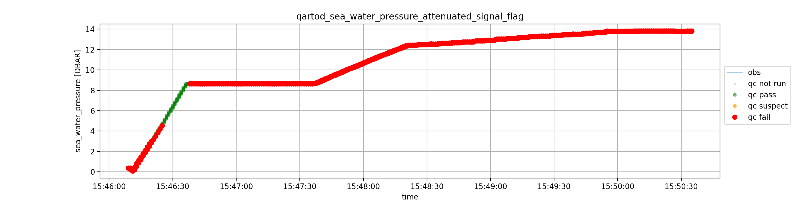qartod_sea_water_pressure_climatological_flag
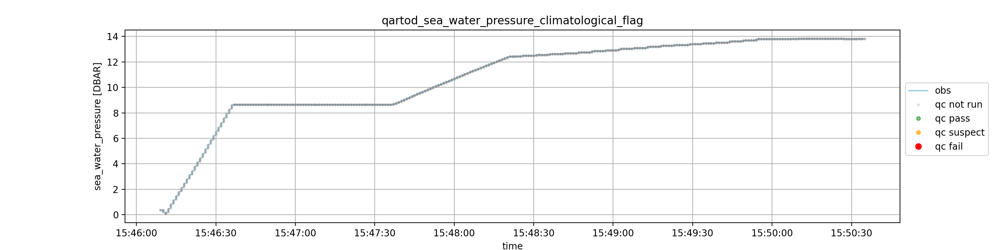qartod_sea_water_pressure_density_inversion_flag

qartod_sea_water_pressure_flat_line_flag
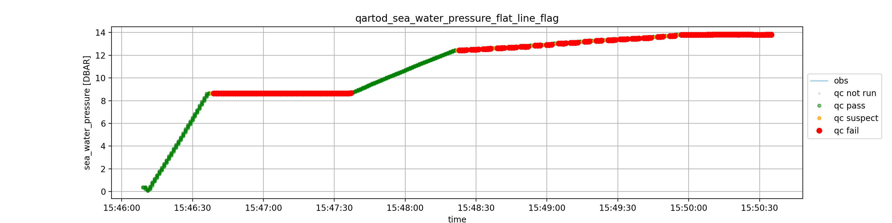qartod_sea_water_pressure_gap_flag
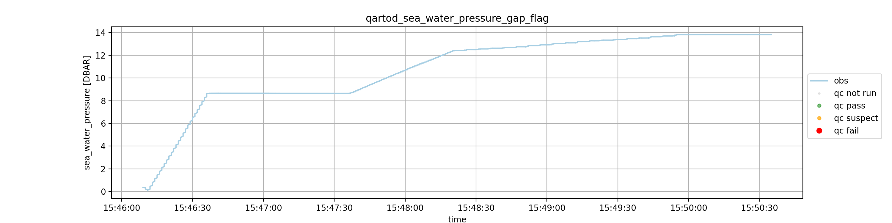qartod_sea_water_pressure_gross_range_flag
qartod_sea_water_pressure_location_flag
qartod_sea_water_pressure_pressure_flag
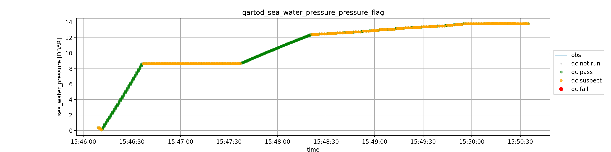qartod_sea_water_pressure_primary_flag
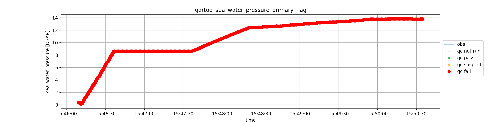qartod_sea_water_pressure_rate_of_change_flag
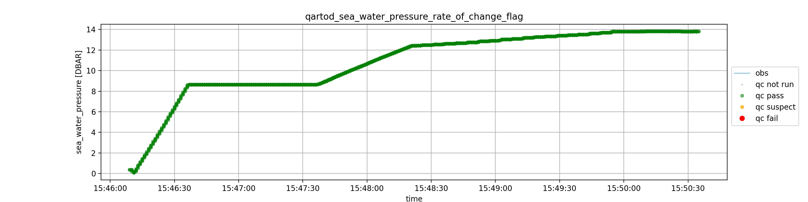qartod_sea_water_pressure_spike_flag
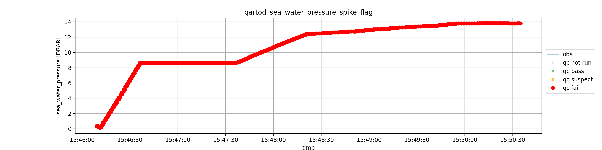qartod_sea_water_pressure_syntax_flag
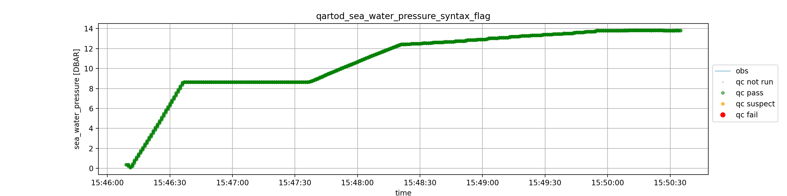qartod_sea_water_pressure_valid_range_flag
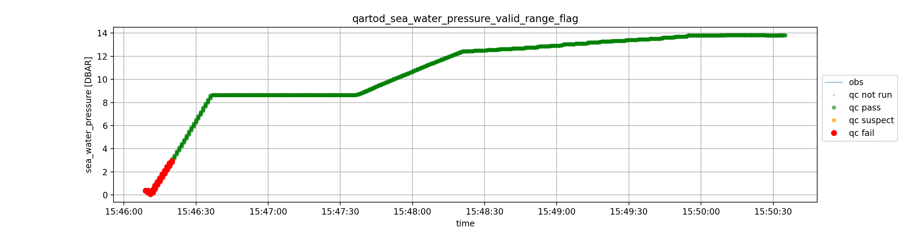
sea_water_practical_salinity
qartod_sea_water_practical_salinity_attenuated_signal_flag
qartod_sea_water_practical_salinity_climatological_flag
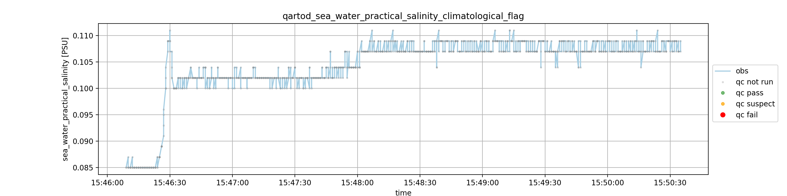qartod_sea_water_practical_salinity_density_inversion_flag
qartod_sea_water_practical_salinity_flat_line_flag
qartod_sea_water_practical_salinity_gap_flag
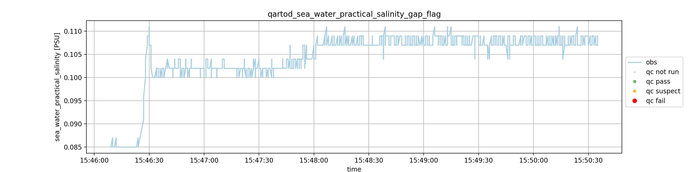qartod_sea_water_practical_salinity_gross_range_flag
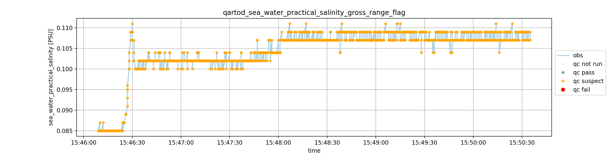qartod_sea_water_practical_salinity_location_flag
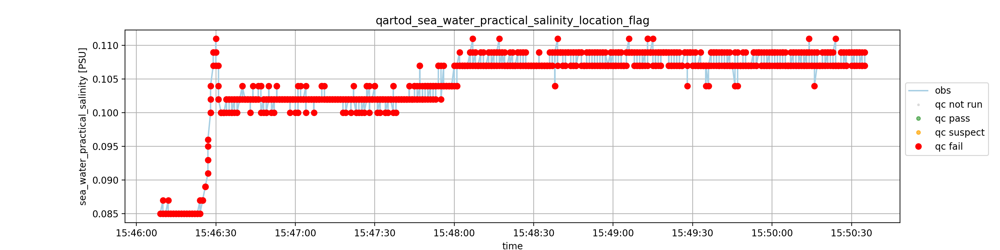qartod_sea_water_practical_salinity_primary_flag
qartod_sea_water_practical_salinity_rate_of_change_flag
qartod_sea_water_practical_salinity_spike_flag
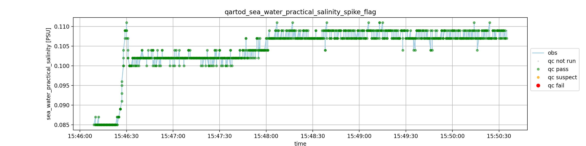qartod_sea_water_practical_salinity_syntax_flag
qartod_sea_water_practical_salinity_valid_range_flag
sea_water_ph
qartod_sea_water_ph_attenuated_signal_flag
qartod_sea_water_ph_climatological_flag
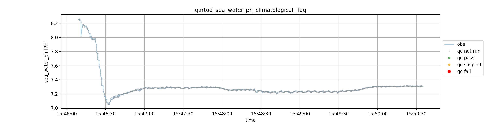qartod_sea_water_ph_density_inversion_flag
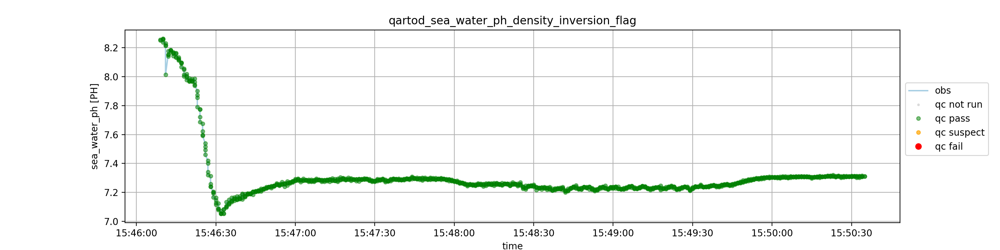qartod_sea_water_ph_flat_line_flag
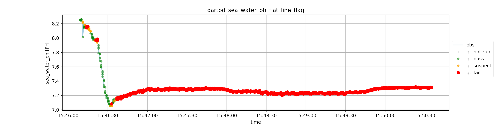qartod_sea_water_ph_gap_flag
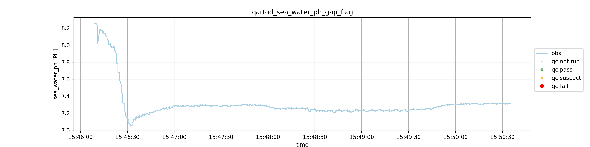qartod_sea_water_ph_gross_range_flag
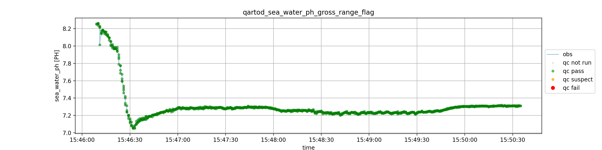qartod_sea_water_ph_location_flag
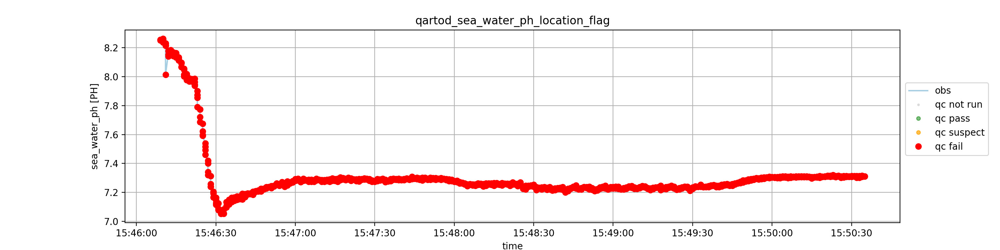qartod_sea_water_ph_primary_flag
qartod_sea_water_ph_rate_of_change_flag

qartod_sea_water_ph_spike_flag
qartod_sea_water_ph_syntax_flag
qartod_sea_water_ph_valid_range_flag
sea_water_dissolved_oxygen
qartod_sea_water_dissolved_oxygen_attenuated_signal_flag
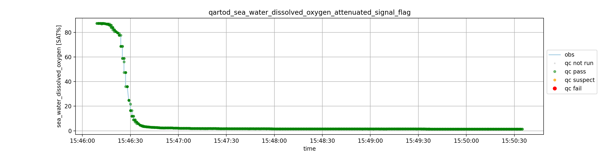qartod_sea_water_dissolved_oxygen_climatological_flag
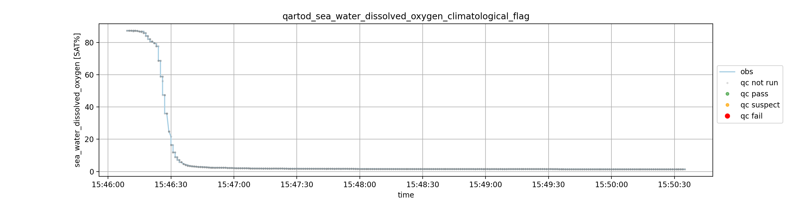qartod_sea_water_dissolved_oxygen_density_inversion_flag
qartod_sea_water_dissolved_oxygen_flat_line_flag
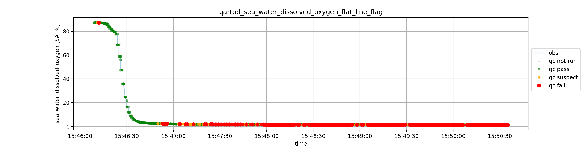qartod_sea_water_dissolved_oxygen_gap_flag
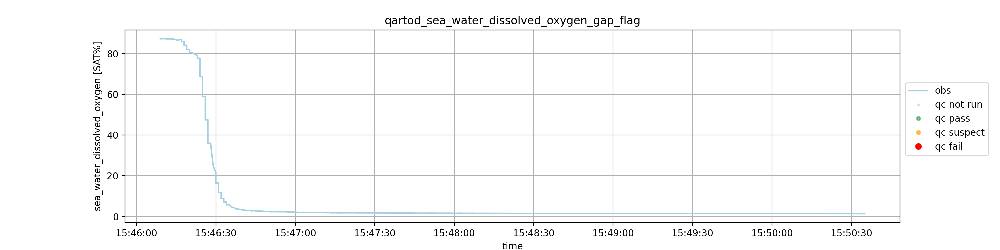qartod_sea_water_dissolved_oxygen_gross_range_flag
qartod_sea_water_dissolved_oxygen_location_flag
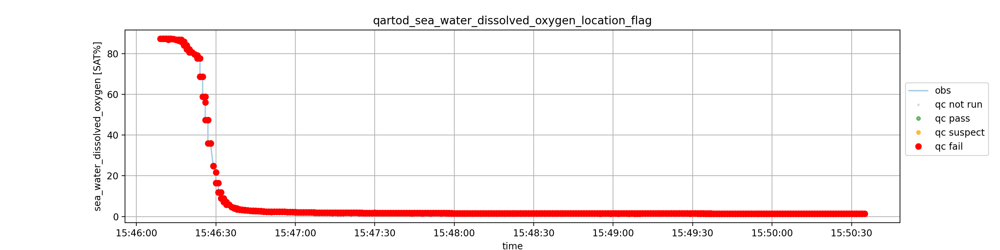qartod_sea_water_dissolved_oxygen_primary_flag
qartod_sea_water_dissolved_oxygen_rate_of_change_flag
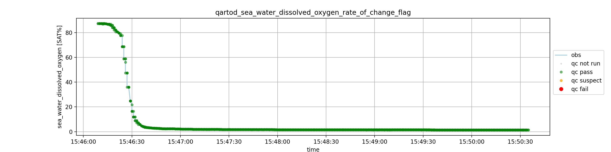qartod_sea_water_dissolved_oxygen_spike_flag
qartod_sea_water_dissolved_oxygen_syntax_flag
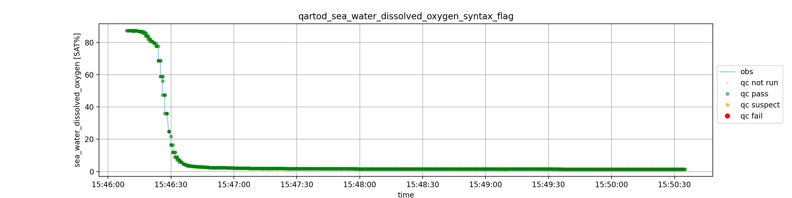qartod_sea_water_dissolved_oxygen_valid_range_flag
sea_water_fluorescence
qartod_sea_water_fluorescence_attenuated_signal_flag
qartod_sea_water_fluorescence_climatological_flag
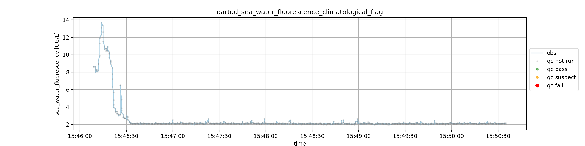qartod_sea_water_fluorescence_density_inversion_flag
qartod_sea_water_fluorescence_flat_line_flag
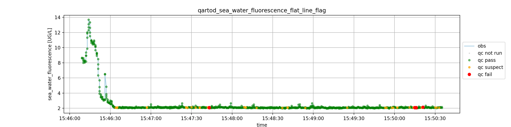qartod_sea_water_fluorescence_gap_flag
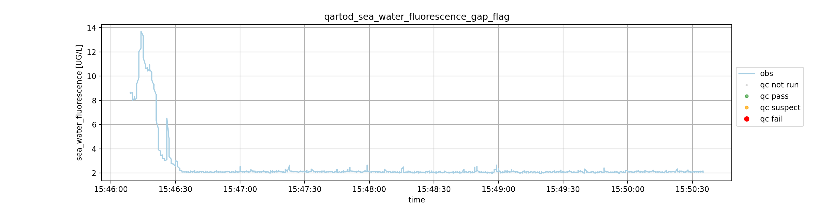qartod_sea_water_fluorescence_gross_range_flag
qartod_sea_water_fluorescence_location_flag
qartod_sea_water_fluorescence_primary_flag
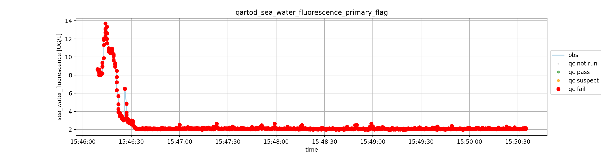qartod_sea_water_fluorescence_rate_of_change_flag
qartod_sea_water_fluorescence_spike_flag
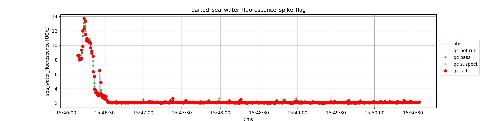qartod_sea_water_fluorescence_syntax_flag
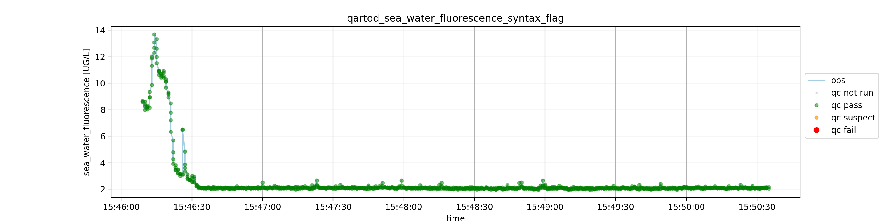qartod_sea_water_fluorescence_valid_range_flag
sea_water_turbidity
qartod_sea_water_turbidity_attenuated_signal_flag
qartod_sea_water_turbidity_climatological_flag
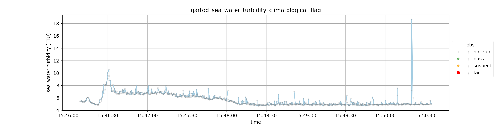qartod_sea_water_turbidity_density_inversion_flag
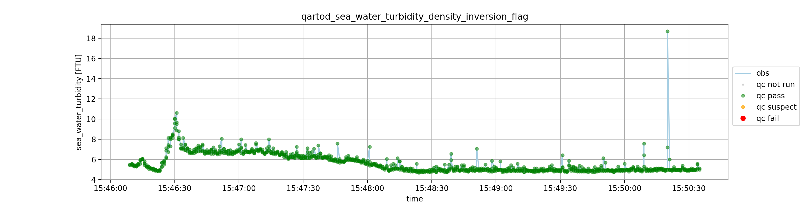qartod_sea_water_turbidity_flat_line_flag
qartod_sea_water_turbidity_gap_flag
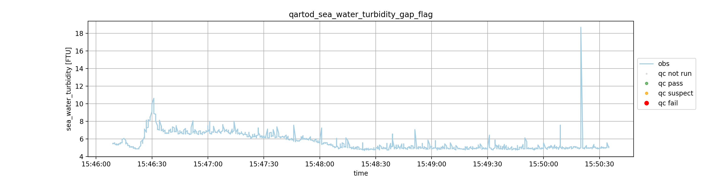qartod_sea_water_turbidity_gross_range_flag
qartod_sea_water_turbidity_location_flag
qartod_sea_water_turbidity_primary_flag
qartod_sea_water_turbidity_rate_of_change_flag
qartod_sea_water_turbidity_spike_flag
qartod_sea_water_turbidity_syntax_flag
qartod_sea_water_turbidity_valid_range_flag
altitude
qartod_altitude_attenuated_signal_flag
qartod_altitude_climatological_flag
qartod_altitude_density_inversion_flag
qartod_altitude_flat_line_flag
qartod_altitude_gap_flag
qartod_altitude_gross_range_flag
qartod_altitude_location_flag
qartod_altitude_primary_flag
qartod_altitude_rate_of_change_flag
qartod_altitude_spike_flag

qartod_altitude_syntax_flag
qartod_altitude_valid_range_flag
depth
qartod_depth_attenuated_signal_flag
qartod_depth_climatological_flag
qartod_depth_density_inversion_flag
qartod_depth_flat_line_flag
qartod_depth_gap_flag
qartod_depth_gross_range_flag
qartod_depth_location_flag
qartod_depth_primary_flag
qartod_depth_rate_of_change_flag
qartod_depth_spike_flag
qartod_depth_syntax_flag
qartod_depth_valid_range_flag